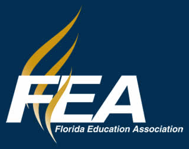

EXPERIENCE
Work experience
My experience includes enterprise IT support, equipment deployment, and team management. Select a role to read more.
Download my resume · WordHCA HealthcareInformation Technology & Services Intern+
- Manage on-site and remote support queues, resolving approximately 10 tickets per week for a North Florida division of 200+ employees. Support needs span desktops, executive users, hardware, software, and networking.
- Prepare, image, and deploy 50+ desktops, laptops, desk phones, mobile devices, and teleworker equipment using Active Directory, SCCM, and networking tools.
- Support enterprise projects involving Cisco conference room AV, CMDB and Active Directory cleanup, technology refreshes, office upgrades, and server room organization.
Island Fin Poke CompanyManager+
- Lead daily restaurant operations, including customer service, inventory, scheduling, and operational efficiency.
- Lead and train a team of 15 members, helping create a positive and productive workplace.
- Apply detailed knowledge of menu items, allergens, and dietary accommodations to support safe service.

Florida Education AssociationIT Intern+
- Inventoried 100+ technology assets deployed across Florida, including laptops, network switches, and servers.
- Supported laptop imaging, setup, peripherals, software configuration, end-user customization, and end-of-lease device wiping.
- Shadowed network administrators configuring and supporting Cisco Meraki equipment.
Golden Eagle Country ClubCart Attendant+
- Assisted golfers with carts, equipment, and transportation logistics.
- Prepared and maintained golf carts, driving range equipment, and guest areas to support organized daily operations.
Chick-fil-ATeam Member+
- Delivered customer service in a fast-paced, high-volume restaurant.
- Operated POS systems, processed transactions, supported accurate order fulfillment, and assisted with food delivery and front-of-house operations.